PORTRAIT PERSONNEL
MON UNIVERS
崔子航
Cui Zihang · Harbin, Chine
FAISONS CONNAISSANCE
BONJOUR
Je m’appelle
Cui Zihang.
Je viens de Harbin, dans la province du Heilongjiang, au nord-est de la Chine. J’aime l’hiver et le football. Pendant mon temps libre, j’aime aussi jouer aux jeux vidéo.
- Nom
- Cui Zihang 崔子航
- Ville d’origine
- Harbin
- Province
- Heilongjiang
- Pays
- Chine
MES PASSIONS
MA SAISON PRÉFÉRÉE
L’HIVER
C’est la saison
que je préfère.
L’hiver me plaît pour la neige, le froid et cette atmosphère particulière. Quand je pense à ma ville, c’est souvent une image de Harbin sous la neige qui me vient à l’esprit.
C’est donc par cette ambiance hivernale que j’ai choisi de vous présenter mon univers.
HARBIN · HEILONGJIANG · CHINELE SPORT QUE J’AIME
LE FOOT
Une autre
de mes passions.
J’aime le football pour son rythme et l’émotion d’un match. Un ballon, un terrain, et l’attention se porte sur le jeu.
Il a naturellement sa place sur cette page, à côté de l’hiver et des jeux vidéo.
LE TERRAIN · LE MATCH · LE JEUPENDANT MON TEMPS LIBRE
LES JEUX
Tout simplement,
pour le plaisir.
Jouer aux jeux vidéo est l’un de mes loisirs. J’aime pouvoir entrer dans un autre univers et me concentrer sur une partie.
C’est une façon de passer un bon moment et de faire une pause dans la journée.
MON LOISIR, À MON RYTHMEÉCRIVEZ-MOI
CONTACT
Une question ou envie de faire connaissance ?
Laissez-moi un message ci-dessous.
Le formulaire ne s’affiche pas ? Ouvrir le formulaire dans un nouvel onglet ↗
MERCI DE VOTRE VISITE
À BIENTÔT
Cui Zihang 崔子航
RETOUR EN HAUT ↑